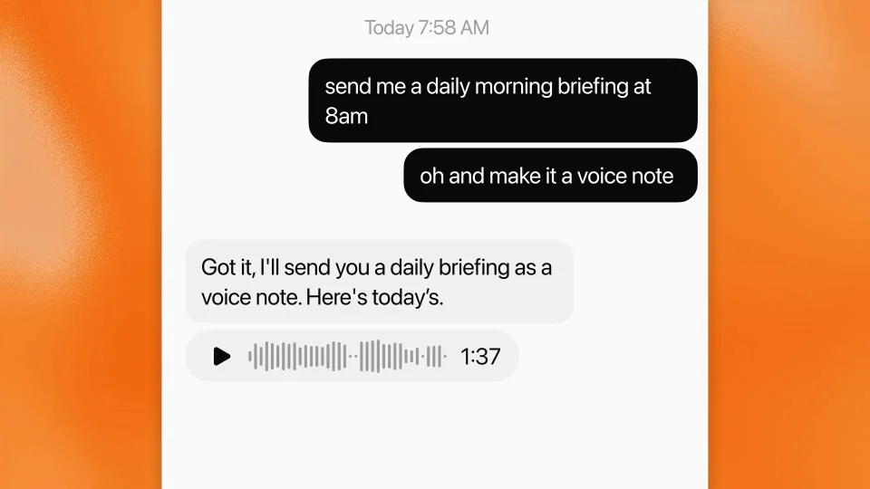
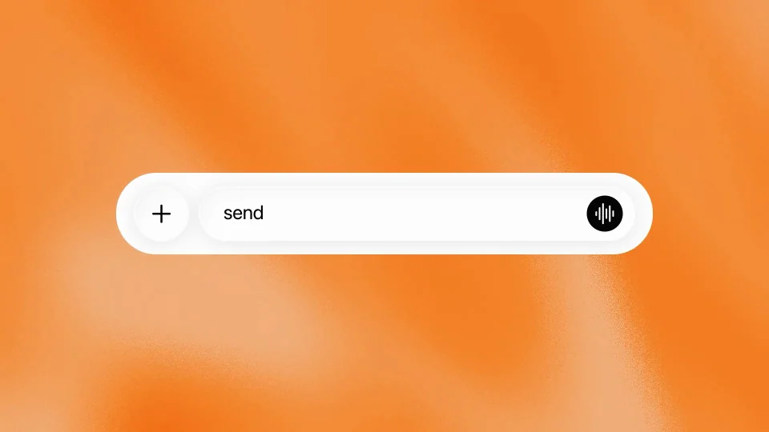
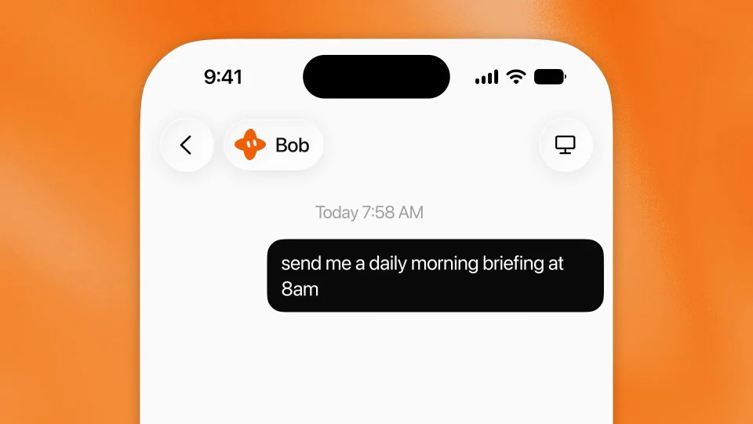
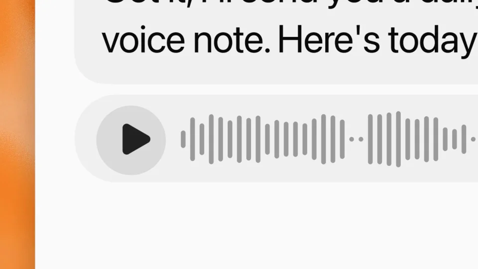
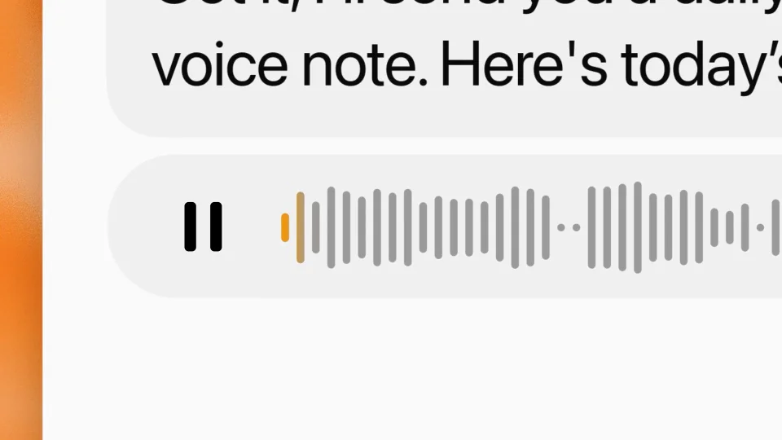

xAI / Grok / V028
Grok Bot — it can send you voice notes
先约定内容和发送时间，再补充“用语音发给我”。新增的输出形式通过一张可播放的语音卡体现。
构图与编排 可播放 · 可替换内容
整体编排规则示例
查看 HTML 源码
<!doctype html><html lang="zh-CN"><meta charset="utf-8"><meta name="viewport" content="width=device-width,initial-scale=1"><title>Grok Bot — it can send you voice notes · sequence</title><style>html,body{margin:0;width:100%;height:100%;overflow:hidden;background:#fff5eb}canvas{display:block;width:100%;height:100%;object-fit:contain}</style><body data-mode="sequence"><canvas width="1000" height="600"></canvas><script src="data.js"></script><script src="common.js"></script><script src="scene.js"></script><script src="bridge.js"></script></body></html>画面元素输入栏定时请求格式补充语音卡播放钮波形进度
MOTION LANGUAGE
动作与构图
局部动作 · 构图规则
01
把两次请求分开显示
橙色光晕衬托白手机，第一条气泡说明日常内容与时间，第二条补充语音形式。无衬线文字保持同一字号，聊天气泡按说话顺序排列。
02
从文字回答长出播放器
从文字回答长出播放器规则示例
查看 HTML 源码
<!doctype html><html lang="zh-CN"><meta charset="utf-8"><meta name="viewport" content="width=device-width,initial-scale=1"><title>Grok Bot — it can send you voice notes · sequence</title><style>html,body{margin:0;width:100%;height:100%;overflow:hidden;background:#fff5eb}canvas{display:block;width:100%;height:100%;object-fit:contain}</style><body data-mode="clip" data-start="4" data-end="14"><canvas width="1000" height="600"></canvas><script src="data.js"></script><script src="common.js"></script><script src="scene.js"></script><script src="bridge.js"></script></body></html>确认信息后出现波形卡。播放前保留播放图标和总时长，点击后图标变暂停，颜色从左向右经过波形。
语音总时长与宣传片时长分别设置，进度与播放状态保持一致。
03
改成其他多模态交付
可换成课程摘要、团队简报或每日提醒。保留内容请求、格式补充和播放体验三个层次；替换语音时同步更新时长和波形。
SEQUENCE
段落与节奏
点击段落，定位到上方编排示意。





画面参考 · 离散静帧
KEEP THE RELATIONSHIPS
制作其他主题
- 可迁移为其他内容的多模态交付，保留格式变更→产物→播放证据。
- 时间和音频长度独立设置。
制作约束
输入栏 / 定时请求 / 格式补充 / 语音卡 / 播放钮 / 波形进度
- 先规定内容和时间，再补充输出形式，结果变成语音卡。
- 点击后播放钮转暂停，进度颜色沿波形推进。
- 示例语音长度不是本视频长度，不把 1:37 当动画时长。